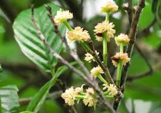

Ticodendraceae
(No common name)
Ticodendraceae is a monotypic plant family in the order Fagales, containing only a single genus, Ticodendron, and a single species, T. incognitum. This evergreen tree is native to the montane cloud forests of Central America. It was only relatively recently discovered and described (1989/1991), representing a unique lineage within the Fagales, characterized by its distinctive stipules leaving ring-like scars, dioecious condition, and drupaceous fruit.
Overview
The family Ticodendraceae consists of just one species, Ticodendron incognitum, a medium to large evergreen tree found in high-elevation cloud forests from southern Mexico (Chiapas) through Central America (Guatemala, Honduras, Nicaragua, Costa Rica, Panama). Its relatively recent formal description highlights that significant botanical diversity can still remain undiscovered, even in relatively well-explored regions.
Ticodendron is wind-pollinated and dioecious (having separate male and female trees). Its placement within the Fagales order aligns it with familiar temperate trees like oaks, beeches, birches, and walnuts, although it possesses a unique combination of characteristics not found in other families of the order, particularly its stipule structure and drupaceous fruit combined with an inferior ovary.
The tree has no major economic uses, but its discovery was significant for plant systematics, providing a new piece in the puzzle of flowering plant evolution, particularly within the Fagales order. It represents an isolated lineage with a restricted geographic distribution in specific montane habitats.
Quick Facts
- Scientific Name: Ticodendraceae
- Common Name: None widely accepted (sometimes Ticodendron)
- Number of Genera: 1 (Ticodendron)
- Number of Species: 1 (Ticodendron incognitum)
- Distribution: Central America (montane cloud forests)
- Evolutionary Group: Eudicots - Rosids - Fabids - Fagales
Key Characteristics
Growth Form and Habit
Ticodendron incognitum is an evergreen tree, reaching heights of 20-30 meters.
Leaves
Leaves are simple, alternate, and arranged in two ranks along the stem (distichous). They have toothed (serrated) margins and asymmetrical bases. A very distinctive feature is the presence of relatively large stipules that fully enclose the terminal bud. These stipules fall off as the bud expands, leaving prominent annular (ring-like) scars encircling the twig at each node.
Inflorescence and Flowers
Plants are dioecious (separate male and female individuals). Flowers are small, inconspicuous, lack petals (apetalous), and are adapted for wind pollination (anemophily).
- Male Inflorescence: Male flowers are grouped in pendulous, catkin-like spikes (aments), typically 3-6 cm long.
- Male Flowers: Lack a perianth (no sepals or petals). Consist of usually 8-15 stamens with very short filaments and relatively large anthers.
- Female Inflorescence: Female flowers are borne solitary (or occasionally 2-3 together) in the axils of leaves, subtended by several small bracts.
- Female Flowers: Also lack a perianth. Consist solely of an inferior ovary composed of 2 fused carpels, forming a single chamber (locule) containing one pendulous ovule. Two long, distinct styles/stigmas protrude from the ovary apex.
Fruits and Seeds
The fruit is a relatively large (2-4 cm long), somewhat flattened, asymmetrical, fleshy drupe with a hard, stony inner layer (endocarp). It contains a single large seed.
The seed has abundant oily endosperm (nutritive tissue).
Field Identification
Identifying Ticodendron incognitum relies heavily on its unique vegetative features and habitat, as flowers and fruits might not always be present:
Primary Identification Features
- Habitat: Restricted to montane cloud forests in Central America.
- Annular Stipule Scars: The ring-like scars completely encircling the twigs at the nodes are highly diagnostic.
- Alternate, Distichous, Serrated Leaves: Simple leaves arranged in two flat ranks along the stem with toothed margins.
- Dioecious Habit: Trees are either male (producing catkins) or female (producing solitary flowers/fruits).
- Male Catkins: Pendulous spikes of small, apetalous flowers (if male tree).
- Solitary Female Flowers/Drupes: Single, inconspicuous flowers or characteristic flattened drupes in leaf axils (if female tree).
- Inferior Ovary / Drupe Structure: Confirms placement (though requires flower/fruit).
Secondary Identification Features
- Evergreen Tree Habit: Retains leaves year-round.
- Asymmetrical Leaf Base: The base of the leaf blade is often uneven where it meets the petiole.
Seasonal Identification Tips
- Flowering/Fruiting: Occurs during specific periods; male catkins or developing/mature drupes are key reproductive features.
- Vegetative State: The annular stipule scars and distichous, serrated leaves are reliable year-round characters.
Common Confusion Points
- Fagaceae (Oaks, Beeches): Also in Fagales, often have serrated leaves and can be wind-pollinated (oaks have catkins). However, Fagaceae typically have different stipule types (usually linear, not leaving annular scars), flowers with a perianth (calyx), and fruits that are nuts associated with a cupule (e.g., acorn). Ovary is inferior.
- Betulaceae (Birches, Alders): Also in Fagales, often have serrated leaves and male catkins. Differ in having generally smaller, non-annular stipules, female flowers often in cone-like structures (strobili), superior or inferior ovary depending on genus, and fruits that are small nuts or samaras, not large drupes.
- Ulmaceae (Elm Family): Have alternate, often distichous, serrated leaves with asymmetrical bases, but stipules are typically small and fall early without leaving annular scars. Flowers are usually bisexual or polygamous, often wind-pollinated but different structure (perianth present), ovary superior, fruit a samara or nutlet.
Field Guide Quick Reference
Look For:
- Tree (Central American cloud forest)
- Annular stipule scars on twigs (key!)
- Alternate, distichous, serrated leaves
- Asymmetrical leaf base
- Dioecious (separate male/female trees)
- Male: Pendulous catkins, no perianth
- Female: Solitary flowers, no perianth, inferior ovary
- Fruit: Flattened drupe
Key Distinctions:
- vs. Fagaceae/Betulaceae: Ticodendraceae has annular stipule scars, lacks perianth, has large drupe fruit.
- vs. Ulmaceae: Ticodendraceae has annular stipule scars, lacks perianth, inferior ovary, drupe fruit.
Notable Examples
As a monotypic family, there is only one species:

Ticodendron incognitum
(No common name)
The sole member of the Ticodendraceae family. This evergreen tree is endemic to the montane cloud forests of Central America. Its discovery in the late 20th century added a unique branch to the Fagales phylogenetic tree, characterized by its distinctive stipule scars, dioecious reproduction, and drupaceous fruit.

Discovery Significance
A Unique Lineage
Ticodendron incognitum remained 'incognitum' (unknown) to science until specimens collected in Costa Rica in the late 1960s were eventually recognized as something entirely new. Its formal description in 1989 (genus) and 1991 (family) was a major botanical event, demonstrating that distinct, family-level lineages could still be awaiting discovery in tropical forests.
Phylogeny and Classification
Ticodendraceae belongs to the order Fagales, situated within the fabid clade (or nitrogen-fixing clade) of the rosids. This order is well-known for its predominantly temperate woody plants, many of which are wind-pollinated and form ectomycorrhizal associations.
Molecular phylogenetic studies place Ticodendraceae as a distinct lineage within Fagales. It is consistently resolved as the sister group to the family Betulaceae (Birch family), or sometimes sister to a combined Betulaceae + Fagaceae clade. This phylogenetic position makes it crucial for understanding the early diversification and character evolution within the Fagales order, bridging morphological gaps between other families.
Position in Plant Phylogeny
- Kingdom: Plantae
- Clade: Angiosperms (Flowering plants)
- Clade: Eudicots
- Clade: Rosids
- Clade: Fabids (Nitrogen-fixing clade)
- Order: Fagales
- Family: Ticodendraceae
Evolutionary Significance
Ticodendraceae, despite being monotypic, is evolutionarily important:
- Phylogenetic Link: Its position as sister to Betulaceae (or Betulaceae+Fagaceae) provides a key data point for understanding relationships and trait evolution (e.g., evolution of wind pollination, fruit types, stipule morphology) within the Fagales.
- Unique Character Combination: Possesses a mosaic of features (annular stipule scars, inferior ovary, drupaceous fruit) not found together in other Fagales families, possibly representing ancestral traits or unique specializations.
- Biogeography: Its restricted Central American distribution contrasts with the more widespread temperate distribution of many close relatives, raising questions about the historical biogeography of the Fagales order.
- Discovery Story: Serves as a reminder of the potential for discovering previously unknown, distinct lineages in biodiversity hotspots.